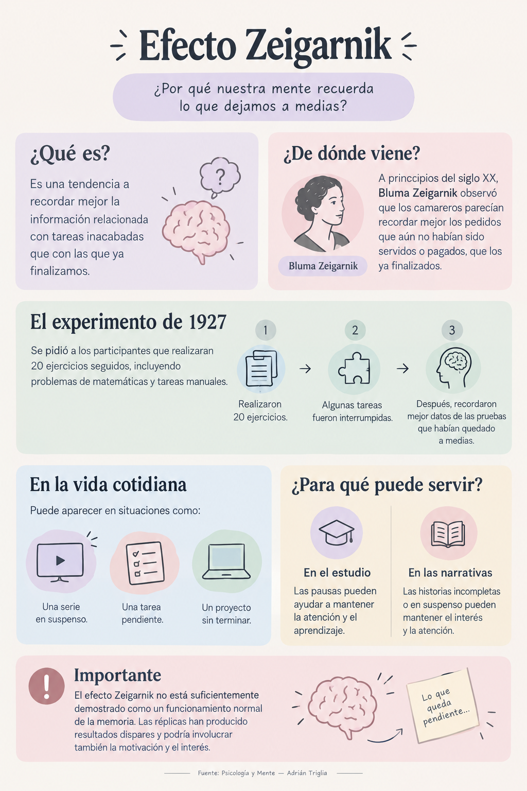

Descubre el Efecto Zeigarnik: el fascinante sesgo cognitivo que mantiene encendidas tus tareas inconclusas. Explora la infografía oficial, mira el video explicativo y usa la Skill interactiva en vivo para vencer la procrastinación y crear retención profunda.
A principios del siglo XX en un café de Viena, la psicóloga Bluma Zeigarnik y su mentor Kurt Lewin notaron un comportamiento asombroso: los camareros retenían en su memoria pedidos kilométricos y complejos sin apuntar nada... pero una vez que el cliente pagaba la cuenta, la información desaparecía instantáneamente de sus mentes.
El cerebro humano genera una tensión psicológica activa cuando inicia una tarea. Esa tensión solo se desactiva cuando el ciclo se cierra. Si se interrumpe deliberadamente, el hilo de procesamiento permanece en primer plano.
"Recordamos las tareas interrumpidas o no terminadas mucho mejor que las que ya hemos completado con éxito."
En el experimento de 1927, los participantes completaron 20 tareas manuales y matemáticas. Aquellas que fueron interrumpidas artificialmente a la mitad se recordaron hasta un 90% mejor que las finalizadas.
Revisa la infografía completa con el mapa conceptual del fenómeno: orígenes históricos, el experimento de 1927, aplicaciones prácticas y su rigor científico.

Tendencia psicológica a recordar la información de tareas inacabadas frente a las ya finalizadas.
Bluma Zeigarnik observó a camareros recordando comandas abiertas pero olvidando las cuentas saldadas.
20 ejercicios prácticos: los interrumpidos generaron un recuerdo mucho más persistente en la memoria.
Series con cliffhangers, tareas pendientes de trabajo y proyectos postergados que no nos dejan dormir.
El efecto involucra la motivación intrínseca; sin interés personal, la persistencia en memoria se reduce.
Observa la animación explicativa de 29 segundos: cómo reacciona tu cerebro cuando cierras la laptop con un informe a medias y cómo cerrarlo conscientemente.
Haz clic en cualquier segmento para reproducir la lección exacta:
Introducción al dilema cognitivo: el cerebro atrapado en el bucle.
La definición directa: las tareas no terminadas quedan encendidas en la memoria.
Cierras la computadora pero sigues pensando en la frase exacta que te faltó redactar.
Por qué el suspenso nos obliga a ver el siguiente episodio de inmediato.
Termina una pequeña parte, anota el siguiente paso o cierra la tarea formalmente para descansar.
Experimenta el poder de la Skill Efecto Zeigarnik directamente en esta landing. Selecciona tu protocolo, escribe tu desafío o pulsa un ejemplo predefinido para recibir una estrategia psicológica a medida.
Experimenta en carne propia cómo se comporta tu atención ante una interrupción inesperada. Memoriza la lista y observa qué palabra prevalece.
¿Qué palabra saltó a tu mente en el momento exacto del corte?
Tu corteza prefrontal abrió un proceso de alta prioridad para completar la secuencia truncada. Este es el corazón del Efecto Zeigarnik: lo inconcluso genera alerta; lo finalizado se archiva y se olvida.
Respuestas con rigor psicológico sobre cómo sacarle el máximo provecho sin caer en el agotamiento mental.
efecto-zeigarnik.md contiene la especificación con metadatos YAML y directrices operativas. Puedes importarlo a plataformas de agentes (como Antigravity, Claude o Copilot) para que el asistente aplique automáticamente los 4 protocolos cognitivos.
Recibe cada semana una dosis de psicología práctica aplicada a la productividad, el aprendizaje y la toma de decisiones.